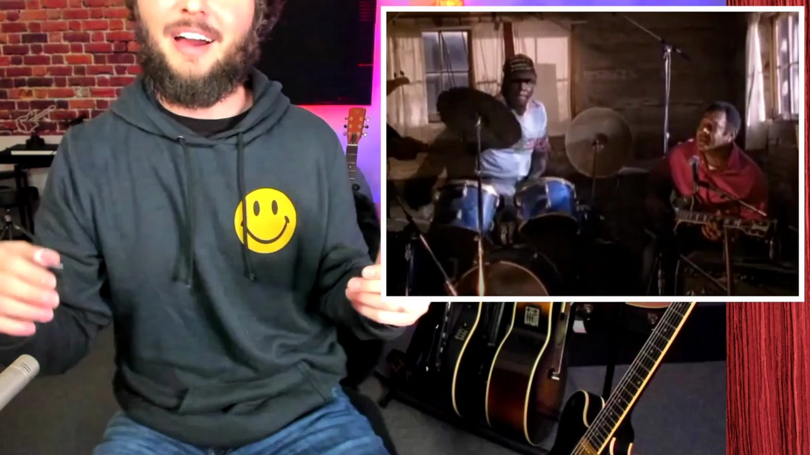
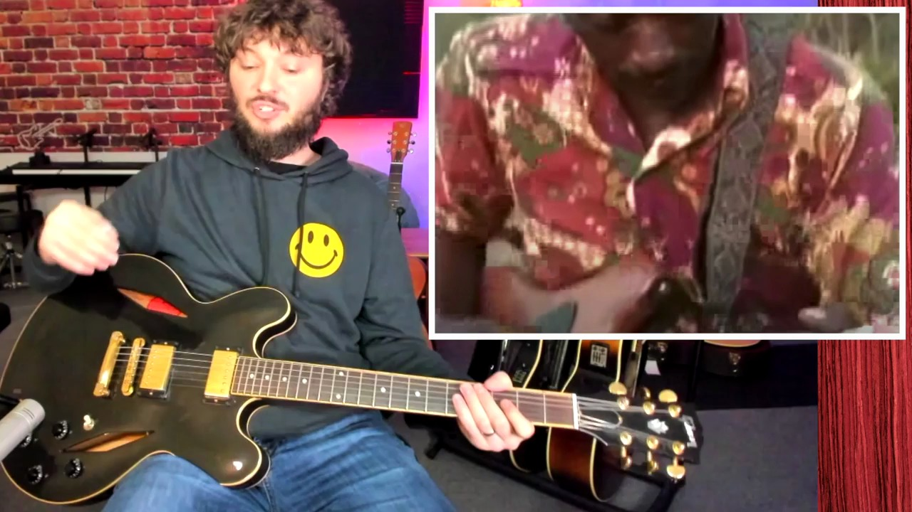

Key Moments




Summary & Script
The Hypnotic Sound of Hill Country Blues - A Guitar Lesson with a Guitar Teacher
Source: https://www.youtube.com/watch?v=a0z-2s5BRBs
Video ID: a0z-2s5BRBs
Overview
The video introduces Hill Country blues, a rhythm‑driven, percussive style that developed in Mississippi’s juke‑joints as a dance‑floor alternative to Delta blues. The instructor explains the two main sub‑styles—Delta‑drone and hypnotic boogie—and demonstrates how to achieve their signature sound by focusing on right‑hand technique. Classic masters — Fred McDowell, Junior Kimbrough, and R.L. Burnside — are showcased, with close‑up analysis of their hand positions, tunings, and picking patterns.
Topics Covered
- Hill Country blues vs. Delta blues – Emphasis on upbeat, dance‑able grooves and heavy percussive strumming rather than melodic soloing.
- Two core approaches
- Delta‑drone – Slow, repetitive bass‑note drone (often on electric guitar), over which minor‑pentatonic riffs are layered.
- Hypnotic boogie – Strict, groove‑based rhythm that relies on aggressive, syncopated right‑hand strumming.
- Right‑hand fundamentals – Thumb‑pick (or thumb) drives the low strings; index (and occasionally middle) finger adds off‑beat accents; strong attack on top strings; immediate muting after the strike.
- Technique breakdown with Fred McDowell – Open‑E (or open‑C) tuning, thumb‑pick + index finger pattern, alternating bass‑string hits, slide embellishments, left‑hand muting.
- Junior Kimbrough example – Eb standard tuning, drone‑note foundation, repeated riffs, continuous thumb motion while backing band adds depth.
- R.L. Burnside demonstration – Tuning up to F, no thumb‑pick needed, similar “2‑and‑4” accent pattern; shows how to practice by alternating low‑E bass with higher strings.
- Practice tips – Start with simplified bass‑and‑chunka patterns, gradually add syncopation; keep the right hand relaxed but forceful; use a thumb‑pick for endurance.
Key Takeaways
- Hill Country blues is defined by a percussive, groove‑first guitar approach; the right hand is the driver of the style.
- Master the alternating thumb‑bass + index‑finger chop pattern, emphasizing beats 2 and 4.
- Use open or half‑step tunings (open E, open C, Eb standard, F) to get the resonant drone feel.
- Thumb picks are optional but help protect the thumb during the aggressive strumming.
- Listening to the three pioneers—Fred McDowell, Junior Kimbrough, R.L. Burnside—provides concrete models for the two sub‑styles.
- Practice by isolating the low‑string “bass” motion, then add the percussive top‑string “chunka” for a full hypnotic boogie groove.
Notable Quotes
- “The most important thing is the percussive feel with the right hand.”
- “If you just play the bass line without the percussive right‑hand feel, it doesn’t sound like Hill Country blues.”
- “You don’t have to use a thumb pick, but it saves your thumb when you’re slamming those top strings hard.”
- “Without that groove, people can’t dance to it—that’s the whole point of this style.”
Podcast Script
JORDAN: Hey folks, welcome back to the show! I’m Jordan, and today we’re diving into a gritty, foot‑stomping corner of the blues that most people skip over – Hill Country blues, the upbeat, percussive cousin of Delta blues that grew up in Mississippi’s juke joints.
JORDAN: Unlike the mournful, slide‑heavy sound you hear on the Delta, Hill Country blues is built for dancing. Think driving rhythms, relentless grooves, and a kind of hypnotic repetition that makes you want to move even if you’ve never held a guitar before.
JORDAN: The secret sauce is the right hand. While Delta players often let their fingers sing melodic lines, Hill Country guitarists treat the instrument like a drum, using a thumb pick and aggressive strumming to make the low strings thump and the high strings snap.
JORDAN: There are basically two approaches you’ll run across. The first, called the “Delta drone,” is a faster, electric‑guitar version of traditional Delta patterns, with a steady bass note that drones underneath repetitive minor‑pentatonic riffs.
JORDAN: The second style is what I like to call “hypnotic boogie.” It’s pure groove – a percussive strum that locks into a rhythm section or stands alone, creating a trance‑like pulse that can carry a whole set on its own.
JORDAN: To get that percussive feel, you’ll want to alternate your thumb on the low E or A string, then quickly chop the higher strings with your index finger. It’s less about fancy note choice and more about the attack and muting that give the rhythm its bite.
JORDAN: Let’s talk pioneers. First up is Mississippi Fred McDowell. In his solo track “Shake ‘Em On Down,” you hear an open‑tuned resonator, a slide, and a right‑hand pattern that feels like a low‑end hammer followed by a bright, syncopated flick.
JORDAN: Notice how Fred uses his thumb pick to drive the bass while his index finger darts across the treble strings. He mutes instantly after each strike, creating that chug‑chug‑chuck sound that’s the hallmark of Hill Country rhythm.
JORDAN: Next is Junior Kimbrough, the electric‑guitar legend who turned the drone into a full‑band affair. His songs often sit on a single, low A or E note while he layers simple, repeating riffs on top – a perfect example of the “Delta drone” in a club setting.
JORDAN: Watching Junior’s right hand, you’ll see a steady thumb motion that never quits, giving his band that relentless, dance‑floor pulse. It’s the kind of groove that makes a juke joint shake from the floor up.
JORDAN: Finally, we have R.L. Burnside, who took the percussive strum to another level. In “See My Jumper Hanging on the Line,” he uses a thumb pick on an F‑tuned guitar, slamming the low strings on beats two and four, then slashing the highs on the off‑beats.
JORDAN: Burnside’s technique shows you don’t need a fancy hand position – just keep the thumb relaxed, let it dig into the string, and let the index finger pop up for that sharp, syncopated snap that makes the whole thing swing.
JORDAN: If you’re trying to practice this style, start by alternating low‑E and the next string, keeping a steady 1‑2‑3‑4 pulse. Then add a quick “chunka” on the higher strings on beats two and four – that contrast is what makes the groove feel alive.
JORDAN: Remember, Hill Country blues isn’t about endless scales; it’s about feeling the rhythm in your bones and letting the guitar become a percussive extension of your body. Keep your attack strong, mute cleanly, and let the drone breathe.
JORDAN: So to sum it up: focus on a percussive right hand, lock in that low‑end thump, sprinkle in simple minor‑pentatonic riffs, and let the groove drive the song. Listen to McDowell, Kimbrough, and Burnside – they’re your blueprint.
JORDAN: That’s it for today’s deep‑dive into Hill Country blues. Keep experimenting, keep the beat rolling, and as always, thanks for tuning in. I’m Jordan – see you next time, and stay groovy!